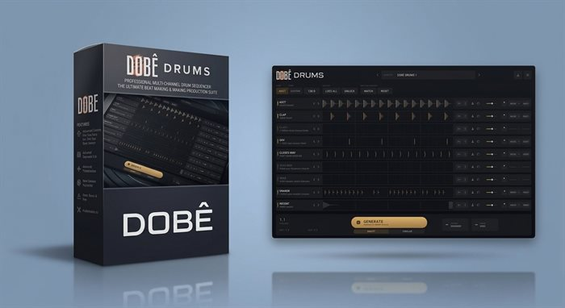

VST3 e Standalone para Windows
DOBÊ DRUMS
Monta grooves de Tech House com os seus próprios samples. Você aperta Generate e ele escreve quatro compassos de kick, clap, hi-hats, percussão e shaker, já no tempo do projeto. Trava o que gostou, gera o resto de novo e arrasta para a DAW em WAV ou MIDI.
Não vem com sons. Ele usa a biblioteca que você já tem.
- Formato
- VST3 e Standalone
- Sistema
- Só Windows 10 e 11, 64-bit
- DAWs
- Ableton, FL Studio, Bitwig, Reaper, Studio One, Cubase
- Samples
- WAV, AIFF, FLAC, MP3 e OGG
- Licença
- 3 computadores, com updates da v1
- Versão
- 1.0.0, funciona offline depois de ativado
R$ 200,00Download e chave de licença por e-mail
ComprarPagamento pela Hotmart com cartão, PayPal ou Pix.